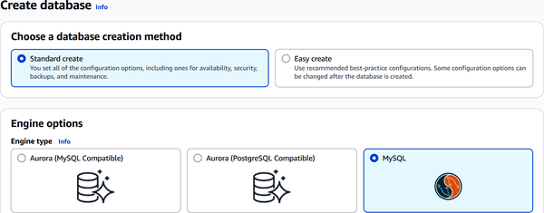

A self-managed EC2-hosted database is where you handle tasks like installing the operating system, configuring the database engine, applying security patches, setting up backups, and replicating data. You will also need to set up the systems for availability, scaling, and monitoring. However, a key advantage of this type of database is that you have full control and flexibility. This can certainly be important for mission-critical databases.
AWS also offers a number of managed database services so that you don’t have to manage all these tasks yourself. Services like Amazon RDS, Aurora, DynamoDB, ElastiCache, and DocumentDB handle the heavy lifting for you.
That said, running your own database on EC2 might look cheaper if you only compare instance costs, especially when using Reserved Instances. But don’t overlook the hidden costs. Your team will spend significant effort on upkeep and troubleshooting.
For the AWS Certified Cloud Practitioner exam, make sure you understand these trade-offs clearly. You’ll also need to know the different types of managed database options AWS provides, which we’ll cover in this chapter.
A relational database stores data in tables made up of rows and columns. Each row represents an individual record, while each column defines what type of data goes into that record.
A major benefit of a relational database is that it can connect different tables together. This is done using something called primary keys and foreign keys. A primary key is a unique identifier in one table, and when another table references it as a foreign key, you can easily pull related data across both tables in your queries.
Another major strength of relational databases lies in their strict adherence to ACID principles. ACID stands for atomicity, consistency, isolation, and durability. This means every transaction either completes fully or doesn’t happen at all (atomicity), keeps data valid according to rules you’ve set (consistency), prevents operations from interfering with each other (isolation), and ensures data stays safe even if the system crashes (durability). These properties protect your data’s integrity, which is why relational databases are a good choice for use cases like financial records, inventory systems, or user account management.
In AWS, you’ll mainly work with two types of relational databases: Amazon RDS and Amazon Aurora. You can then compute analytics on the data using Amazon Redshift.
Amazon Relational Database Service (RDS) simplifies setting up, operating, and scaling relational databases. It supports multiple database engines, including PostgreSQL, MySQL, MariaDB, Oracle, Microsoft SQL Server, and IBM Db2.
In addition, Amazon Aurora is available as a high-performance, fully managed database service that is compatible with MySQL and PostgreSQL. Aurora offers enhanced scalability, reliability, and performance compared to traditional engines, making it a popular choice for demanding workloads.
Through the AWS Management Console, the CLI, or API calls, you can create a fully functioning database within minutes. RDS is also highly scalable. You can increase your database’s compute power and storage capacity quickly with minimal downtime, which is useful when your applications grow.
Let’s see how to create an RDS instance using the AWS Management Console:
Log in to AWS.
Search for RDS and select it.
On the left sidebar, choose Databases.
Select “Create database.” You will be taken to the setup form, which you can see in Figure 11-1.
You will choose a database engine. Select MySQL.
Choose a use case template. The choices include a free tier (for learning and testing), Dev/Test (for development use), and production (for high availability and performance).
Select the deployment option, which depends on what you want for the availability and durability.
Create a unique name for your database.

Besides these settings, there are additional configurations you can make, such as for networking (e.g., VPC, subnet groups, IPv6, or Internet Protocol version 6), security groups (firewall-style access control), and monitoring tools (like CloudWatch, Performance Insights, and Enhanced Monitoring). These settings can improve performance, visibility, security, and connectivity. However, for creating a basic database, the steps we have covered are sufficient.
Amazon Aurora combines the speed and reliability of high-end commercial databases with the simplicity and lower cost of open source options. It is compatible with both MySQL and PostgreSQL. In terms of performance, Aurora delivers up to 5× the throughput of standard MySQL and up to 3× that of standard PostgreSQL on similar hardware, making it well-suited for high-performance relational workloads.
Security is another strong point for Aurora. It offers network isolation within your VPC, encrypts data at rest using AWS KMS, and encrypts data in transit with SSL. It also scales easily. You can choose instance sizes ranging from smaller setups with 2 vCPUs to powerful configurations with 32 vCPUs and 244 GB of memory.
Aurora is also built for high availability and durability. It maintains six copies of your data spread across three Availability Zones, aiming for an uptime of over 99.99%.
Amazon Redshift is a fully managed cloud data warehouse service designed to handle massive, petabyte-scale datasets. It allows organizations to run complex analytical queries using standard SQL without the need to manage infrastructure. With Redshift, data can be quickly ingested from multiple sources—such as operational databases, data lakes, and streaming services—and then transformed into a format optimized for analytics. By leveraging columnar storage and parallel query execution, Redshift ensures high performance for large-scale workloads, making it well-suited for BI, reporting, and data-driven decision making.
A key strength of Amazon Redshift is its integration with AWS services and BI tools. It works seamlessly with Amazon QuickSight for visualization, supports connections with popular third-party tools like Tableau and Looker, and integrates with Amazon S3 through Redshift Spectrum for querying data directly in data lakes. Its managed nature also means automatic scaling, backups, patching, and security features like encryption and network isolation are handled by AWS, reducing the operational burden.
A NoSQL database does not have a traditional table-and-row design. Instead, it stores data as documents, key-value pairs, graphs, or wide-column tables. This flexibility makes NoSQL especially useful when dealing with data that changes frequently or comes in mixed formats.
Another strength of NoSQL systems is their ability to scale horizontally, spreading data across many servers. As applications grow and attract more users, NoSQL databases can expand without bottlenecks. This is why you’ll often find them powering social media feeds, IoT telemetry, fraud detection, and real-time analytics platforms.
Let’s take a look at the NoSQL databases on AWS.
One of the most widely used NoSQL databases on AWS is Amazon DynamoDB, a fully managed key-value and document database. It delivers single-digit millisecond response times even at massive scale. For example, during Amazon Prime Day, DynamoDB processed trillions of API calls, peaking at nearly 90 million requests per second, while maintaining consistent low latency.
Key capabilities include the following:
Supports both key-value and document-style schemas, including nested data such as lists and maps.
DynamoDB supports ACID transactions for multi-item operations, providing strong consistency for critical workloads like order processing or financial systems.
Supports PartiQL, a SQL-compatible query language for reading, updating, and inserting data without requiring DynamoDB’s native API syntax.
For read-heavy workloads, DynamoDB Accelerator (DAX) offers in-memory caching that delivers sub-millisecond performance.
Amazon Timestream is a fully managed time-series database, built to efficiently store and analyze trillions of time-stamped events each day at low cost. It automatically manages the data lifecycle, moving recent data into memory for fast access and archiving older data to lower-cost storage.
Typical use cases include the following:
In-memory databases hold their data entirely in a system’s RAM, bypassing the slower access times of disk-based storage. This approach enables fast read and write operations. Such databases are good for use cases like real-time analytics, high-frequency trading, telecommunication systems, gaming leaderboards, or fraud detection platforms.
The trade-off, however, is volatility. If the system crashes or loses power, all stored data vanishes, although some systems address this by periodically writing snapshots to disk, appending transaction logs, replicating across servers, or leveraging nonvolatile memory.
Amazon ElastiCache is a fully managed in-memory caching and database service designed to simplify deploying, operating, and scaling high-speed data layers in the cloud. It supports two open source engines: Redis and Memcached, letting you plug into existing tools.
Redis-powered ElastiCache supports advanced structures, such as sorted sets for leaderboards, hash maps for user sessions, the publish/subscribe pattern (pub/sub) for messaging, and atomic counters. This enables real-time processing. Meanwhile, Memcached provides a straightforward, scalable key-value caching layer compatible with most existing codebases.
A database migration tool moves your data, schemas, and database-specific behaviors from one system to another. You might use it when shifting from on-premises infrastructure to the cloud, switching to a different database engine, or consolidating several databases into a single system.
One of the key benefits of these tools is that they minimize downtime. They keep your source database running while syncing changes over to the target, so your users do not notice the transition. Most tools also handle schema conversion, continuous data replication, and migration monitoring to keep the process smooth and reliable.
For AWS, there are two main migration tools.
AWS Database Migration Service (DMS) is a fully managed service that automates database migration and replication with minimal disruption. It uses change data capture (CDC) to continuously grab updates from the source while your migration runs.
You can use DMS for both one-time migrations and continuous replication. This makes it useful not only for replatforming but also for consolidating multiple databases or syncing data into data warehouses like Amazon Redshift, Aurora, or S3.
DMS runs on a replication instance, which is an EC2 server that connects to both your source and target databases. You set up your endpoints and migration tasks through the AWS Management Console or APIs. The service scales with your workloads, minimizes downtime, copies schemas, and lets you monitor progress in real time. It also offers features like multi-AZ deployments for high availability, flexible on-demand pricing, and a serverless mode that scales automatically to your needs.
While AWS DMS handles moving your data, the AWS Schema Conversion Tool (SCT) takes care of transforming your schemas and database code. The SCT generates a detailed report highlighting what it converted automatically and what requires manual adjustments, which can save months of work compared to rewriting everything by hand.
DMS is a fully managed AWS service that you configure through the AWS Management Console or CLI. It enables both homogeneous and heterogeneous database migrations with minimal downtime.
The SCT, on the other hand, is a desktop application. Beyond just schema conversion, it can also transform extract, transform, load (ETL) workflows and embedded SQL in applications, making modernization and migration projects more efficient.
You can also use DMS and SCT together, such as with this workflow:
Run AWS SCT to assess your source database and transform the schema into the target engine’s format.
Review the report, fix any components needing manual changes, and apply the converted schema to your target database.
Use AWS DMS to transfer the data, starting with a full load and then continuously replicating updates using CDC.
Switch over your application to point to the new database when you’re ready.
This combined approach ensures minimal downtime and a smooth migration, so you can focus on delivering features rather than worrying about data transfer complexity.
Table 11-1 shows a summary of the different type of AWS database services.
| AWS database service | Description and key points |
|---|---|
|
EC2 self-managed database |
|
|
Amazon RDS |
|
|
Amazon Aurora |
|
|
Amazon DynamoDB |
|
|
Amazon ElastiCache |
|
|
AWS Database Migration Service (DMS) |
|
|
AWS Schema Conversion Tool (SCT) |
|
In this chapter, we looked at the various AWS database services and tools. We learned about self-managed EC2-hosted databases that offer maximum control but require extensive operational effort. However, much of the chapter was focused on fully managed options like Amazon RDS, Aurora, DynamoDB, and ElastiCache. We also covered database migration solutions such as AWS DMS and the SCT, which simplify moving and transforming databases with minimal downtime.
In the next chapter, we’ll take a look at networking in AWS.
To check your answers, please refer to the “Chapter 11 Answer Key”.
What is a key advantage of using a self-managed database on Elastic Compute Cloud (EC2)?
Full control and flexibility over configuration and management
Automated backups and patching
Managed scaling with minimal downtime
Single-digit millisecond latency at scale
What does Amazon DynamoDB primarily provide?
Managed relational database
In-memory caching
Fully managed NoSQL key-value and document database
Schema conversion
What type of scaling does DynamoDB support to handle massive workloads?
Horizontal scaling
Vertical scaling only
No scaling capabilities
Manual scaling with downtime
What are Redis and Memcached supported by?
Amazon Relational Database Service (RDS)
Amazon DynamoDB
Amazon ElastiCache
Amazon Aurora
Which tool would you use to convert embedded SQL in applications during migration?
Amazon RDS
Amazon DynamoDB
AWS Database Migration Service (DMS)
AWS Schema Conversion Tool (SCT)